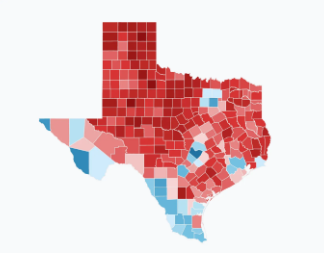

Oct 4, 2026

Claude was used to correct grammatical errors and spell checks in this piece.
It's quite hilarious to me that this is the second time I have found myself interested in US politics, keeping in mind the fact that I don't live there, nor have I experienced the electoral politics of a hegemonic state like the US. But still, from what I do read and watch, I have some thoughts of my own. As usual, I don't focus on the parties and their agendas, but rather on the key factors that might end up deciding who wins.
My focus has not been particularly on the House of Representatives, as the opposition usually gains seats in the midterm, two years into a presidential term, but rather on the key races in the Senate (this one is about Texas), which interest me a lot. No new facts or findings, just an understanding I have developed from observations.
I see Texas as a big US itself. When we look at US maps showing which party is favoured where, the country usually looks red, even though blue might be dominating that year. This is just because red counties are huge in terms of land but sparse in people, unlike blue counties, which are not very big but densely populated.
So the first thing is that, when we look at favourability, the deep red counties are solid red in the polls. But there is something different this time, according to the reporting that I have heard. It is widely being reported that conservative voters, mainly farmers, feel betrayed. It comes down to their problems not being addressed.
That does not change the fact that they will still favour red, but there is a kind of hesitation present this time compared to the enthusiasm of 2024. This hesitation will not make them vote blue, but it plays a major role in making them not vote at all; they will probably sit this one out. This will reduce the overall solid red votes. Combined with the high enthusiasm of blue voters in 2026, this will give the solid voters of the blue party more of an impact.
Next come the independents. They are the ones who really flip elections and decide who wins and by what margins. Their vote and their opinion are strongly influenced by the national environment. They usually favour one party over the other, but they are the ones who can be flipped to either side, unlike the solid red and blue votes, which are almost impossible to flip. With them strongly favouring blue, this is like a double blow to red.
Finally comes the question of how well received the candidates are. The red candidate seems extremely weak in terms of addressing the concerns of the people (including the personal corruption allegations against him), and this sentiment is widely shared among the people.
With the plummeting ratings of the President, the national flagbearer can't mask the individual weaknesses of the candidate.
With one month still left, the results can change. But one metric to look at is that red money really does not seem to be changing the polls all that much. The signs are really not there for red to gain winning momentum. Still, red voters finally coming out to vote on election day is something that can make the election awfully close, within the margin of error.
It is a spicy race for the spectators — that is what I would like to end this piece with.